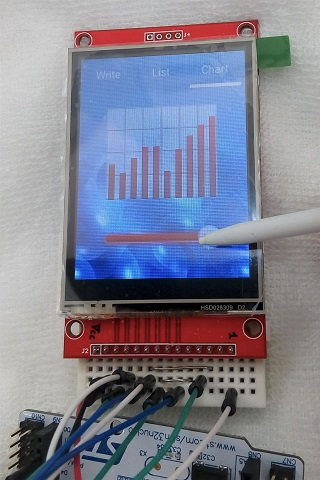

STM32 LittlevGLを使う
2020年02月27日 カテゴリー：STM32

LittlevGLは、組み込み機器のGUI向けのグラフィックライブラリです。これを使いこなせれば、きれいな画面や使いやすい操作が実現できると思われます。公式の導入方法ではわかりにくい部分があるので、デモの実行方法をまとめておくことにしました。使用したNucleoボードはNUCLEO-F401REです。※メモリ使用量はRAM46kB、FLASH407kBとなったので、それなりに容量が必要となります。
＜準備＞
まずは以前の記事（STM32 SPI接続タッチパネル付ディスプレイを使う）の手順を行って、ディスプレイの動作確認をします。そしてそのプロジェクトをそのまま利用し、以下の操作をしていきます。
＜ダウンロード＞
- LittlevGL本体(v6.1.1)
右側の [Clone or download] ボタンからZIPダウンロード、解凍
→フォルダ名「lvgl-master」を「lvgl」へ変更後、プロジェクトのIncフォルダへフォルダごとコピー
- LittlevGLサンプル集
右側の [Clone or download] ボタンからZIPダウンロード、解凍
→フォルダ名「lv_examples-master」を「lv_examples」へ変更後、プロジェクトのIncフォルダへフォルダごとコピー
＜LittlevGLコンフィグファイル編集＞
- lvglフォルダ内のlv_conf_template.hを開き、下記3か所編集
10行目 #if 1 /*Set it to "1" to enable content*/
23行目 #define LV_HOR_RES_MAX (240)
36行目 #define LV_COLOR_16_SWAP 1
→ファイル名「lv_conf_template.h」を「lv_conf.h」へ変更後、プロジェクトのIncフォルダへ移動
- lv_examplesフォルダ内のlv_ex_conf_templ.hを開き、下記2か所編集
9行目 #if 1 /*Set it to "1" to enable content*/
42行目 #define LV_USE_DEMO 1
→ファイル名「lv_ex_conf_templ.h」を「lv_ex_conf.h」へ変更後、プロジェクトのIncフォルダへ移動
※壁紙画像不使用にするとメモリ使用量を減らせます。→44行目 #define LV_DEMO_WALLPAPER 0
＜main.cファイル編集＞
以前の記事（STM32 SPI接続タッチパネル付ディスプレイを使う）で記述したものは消去し、下記4か所に記載
（参考ページ→How start with the LittlevGL on the Disco F746NG with Mbed）
▼/* USER CODE BEGIN Includes */ の下
#include "ili9341.h"
#include "ili9341_touch.h"
#include "lvgl/lvgl.h"
#include "lv_examples/lv_apps/demo/demo.h"
▼/* USER CODE BEGIN 0 */ の下
lv_disp_buf_t disp_buf; // ディスプレイバッファの構造体
lv_color_t buf_1[ILI9341_WIDTH * 10]; // ディスプレイバッファ1
lv_color_t buf_2[ILI9341_WIDTH * 10]; // ディスプレイバッファ2
lv_disp_drv_t disp_drv; // ディスプレイドライバの構造体
lv_indev_drv_t indev_drv; // タッチパッドドライバの構造体
void my_flush_cb(lv_disp_drv_t * disp_drv, const lv_area_t * area, lv_color_t * color_p) // 画面描画
{
int32_t w = area->x2 - area->x1 + 1;
int32_t h = area->y2 - area->y1 + 1;
ILI9341_DrawImage(area->x1, area->y1, w, h, (uint16_t*)color_p);
lv_disp_flush_ready(disp_drv); // 描画終了をライブラリへ知らせる
}
bool my_input_read(lv_indev_drv_t * drv, lv_indev_data_t * data) // タッチパッドのタッチ検出とタッチ位置取得
{
static uint16_t x = 0, last_x = 0;
static uint16_t y = 0, last_y = 0;
if(ILI9341_TouchPressed())
{
ILI9341_TouchGetCoordinates(&x, &y);
data->point.x = x;
data->point.y = ILI9341_HEIGHT - y; // 上下逆さま
last_x = data->point.x;
last_y = data->point.y;
data->state = LV_INDEV_STATE_PR; // タッチあり
}
else
{
data->point.x = last_x;
data->point.y = last_y;
data->state = LV_INDEV_STATE_REL; // タッチなし
}
return false;
}
void init() // ディスプレイ初期化
{
ILI9341_Unselect();
ILI9341_TouchUnselect();
ILI9341_Init();
}
▼/* USER CODE BEGIN 2 */ の下
init(); // ディスプレイ初期化
lv_init(); // ライブラリ初期化
lv_disp_buf_init(&disp_buf, buf_1, buf_2, ILI9341_WIDTH*10); // ディスプレイバッファ初期化
lv_disp_drv_init(&disp_drv); // ディスプレイドライバ初期化
disp_drv.buffer = &disp_buf; // ディスプレイバッファ登録
disp_drv.flush_cb = my_flush_cb; // 画面描画関数登録
lv_disp_drv_register(&disp_drv); // ディスプレイドライバ登録
lv_indev_drv_init(&indev_drv); // タッチパッドドライバ初期化
indev_drv.type = LV_INDEV_TYPE_POINTER; // 入力タイプをタッチパッドに指定
indev_drv.read_cb = my_input_read; // タッチ検出関数登録
lv_indev_drv_register(&indev_drv); // タッチパッドドライバ登録
demo_create(); // デモ呼び出し
▼/* USER CODE BEGIN 3 */ の下
HAL_Delay(100);
lv_tick_inc(100); // ライブラリへ経過時間を知らせる
lv_task_handler(); // ライブラリ実行（画面更新）
ビルドには1分程度かかる場合があります。SPIの通信速度が遅いので、アニメーションはさすがに無理がありそうです。狭い範囲の表示更新については特に問題なさそうな感じです。